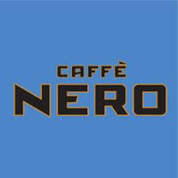
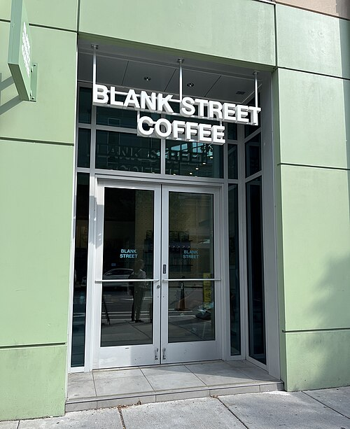
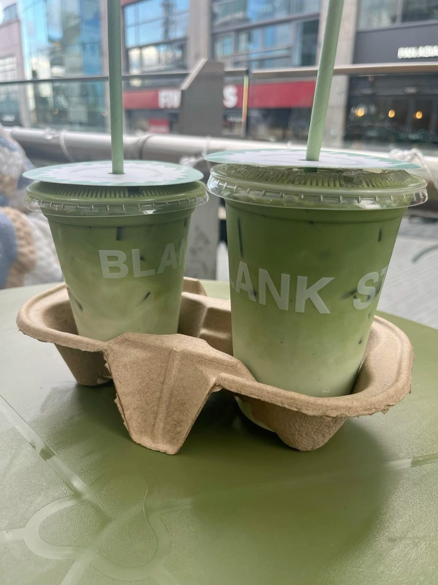
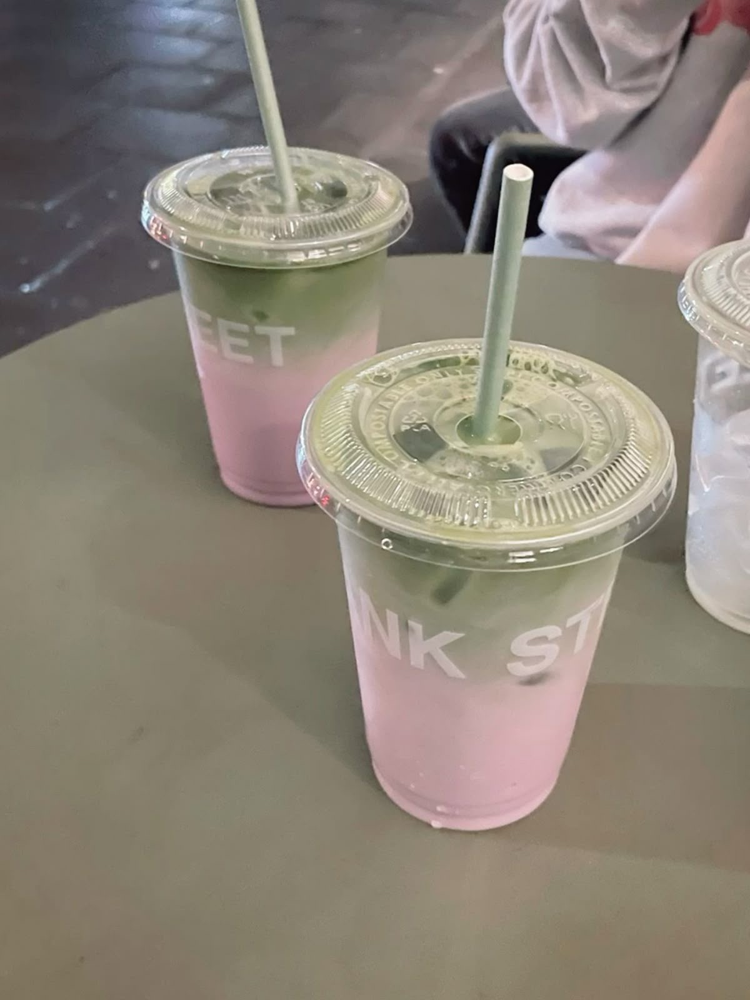
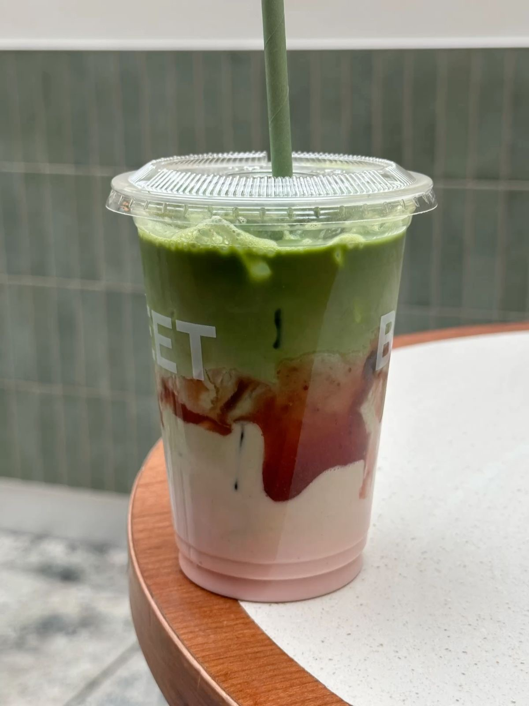

Find the cafe that suits best for your need!
Cafe Weekend
120 Harvard Ave, Boston, MA 02134 (774) 712-3077
Café Weekend is a modern, casual Korean-inspired brunch and dessert café with a warm and welcoming vibe. "Make everyday feel like the weekend."
A cozy spot to enjoy brunch with friends — we recommend visiting before peak hours due to limited seating.
Caffe Nero
1047 Commonwealth Ave, Boston, MA 02215 (617) 941-7510
Caffè Nero is an ideal place to study, with its spacious layout, quiet ambiance, ample outlets, and a variety of comfortable seating. The friendly staff and wide selection of bakery items add to the welcoming environment.
Menu Recommendation
Caffè Nero offers an extensive menu featuring everything from hearty breakfast rolls and filled croissants to freshly baked pastries and wholesome yogurt bowls.
Blank Street Coffee
455 Harvard St, Brookline, MA 02446
Blank Street Coffee redefines the modern coffee experience with a clean, high-quality, and affordable menu.
From its humble beginnings as a small cart in Brooklyn, it has grown into a global brand known for its thoughtfully sourced coffee, fresh local food, and attention to every detail of the customer experience.
Whether it’s a quick stop or a daily ritual, Blank Street delivers a better way to start your day.
Menu Recommendation
They are known for good matcha drinks
- Iced Daydream Matcha
Housemade vanilla bean, honey and cinnamon syrup mixed with oat milk and ceremonial matcha, served iced.
- 
- Iced Strawberry Shortcake Matcha
Housemade strawberry shortcake syrup and strawberry jam mixed with oat milk and ceremonial matcha, served iced.
- 
- 
- Iced Blueberry Matcha
Ceremonial matcha over housemade blueberry oat milk, served iced